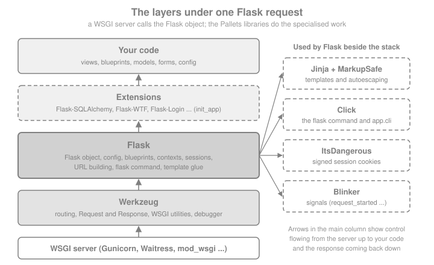

Introduction & Architecture
|
This content was generated with the assistance of AI and should be verified against the official documentation before being relied on in production. |
This page is written against Flask 3.1.3 (released 2026-02-18), Werkzeug 3.1.9, Jinja 3.1.6, Click 8.5.0, ItsDangerous 2.2.0, MarkupSafe 3.0.4 and Blinker 1.9.0, checked on 2026-10-07. Flask 3.1 supports Python 3.9 and newer; the code on this page uses Python 3.10+ syntax and was executed on Python 3.13. Flask 3.2 has not been released yet, so everything described below as "Flask 3.2" is upcoming and may still change. The page explains what Flask is built from, why it is shaped the way it is and where it fits among Python web frameworks, before the rest of the section builds the Bookshelf — a server-rendered book catalogue with a JSON API — step by step.
What Flask Is, and What "Micro" Means
Flask is a web framework for Python maintained by the Pallets organisation; its first release, 0.1, appeared on
2010-04-16. The official docs call it a microframework, and they are specific about the
word: "micro" does not mean that an application has to fit in one file, nor that Flask lacks functionality. It means
that Flask keeps the core simple but extensible and makes few decisions for you. By default it has no database
abstraction layer and no form validation, and it never will: the design page states that Flask itself only bridges
to Werkzeug (to be a proper WSGI application) and to Jinja (for templates), plus a few standard library packages such
as logging. Everything else — databases, forms, uploads, authentication, admin UIs — comes from extensions or from
plain Python libraries you choose yourself.
That explains why Flask depends on libraries and still calls itself micro: the docs compare Werkzeug to Ruby’s Rack library, a good implementation of the WSGI contract that applications can build on instead of rewriting it (see the Ruby Reference for the language).
The snippet below shows how little a Flask application contains out of the box: one object, a config dictionary, a
URL map, a Jinja environment and a command-line group — and an empty extensions dictionary, because nothing
beyond that is installed until you add it.
import importlib.metadata as metadata
from flask import Flask
app = Flask(__name__)
@app.get("/")
def index() -> str:
return "Bookshelf"
print(metadata.version("flask"), metadata.version("werkzeug"))
assert app.extensions == {} # no database, forms or auth until you add them
print(sorted(k for k in app.config if k in {"DEBUG", "TESTING", "SECRET_KEY"}))
assert app.test_client().get("/").data == b"Bookshelf"Source: Flask: What does "micro" mean?
Running it prints 3.1.3 3.1.9 and ['DEBUG', 'SECRET_KEY', 'TESTING'].
Read the version with importlib.metadata.version("flask"), as above. The module attribute flask.__version__ was
deprecated in Flask 3.0 (accessing it emits a DeprecationWarning) and the unreleased Flask 3.2 removes it; older
books and tutorials that print flask.__version__ will therefore break on 3.2.
The Pallets Stack
Flask is one of several libraries maintained by Pallets. Flask requires five of them plus Blinker (all from its package metadata: Werkzeug 3.1 or newer, Jinja2 3.1.2 or newer, ItsDangerous 2.2 or newer, Click 8.1.3 or newer, MarkupSafe 2.1.1 or newer and Blinker 1.9 or newer); Flask 3.1.3 itself installs on Python 3.9 and newer. Knowing which library does which job is the key to reading Flask’s documentation, its tracebacks and the changelogs of every release.
| Library | What it contributes | Where you meet it in Flask |
|---|---|---|
Werkzeug |
The WSGI toolkit: the |
|
Jinja |
The template engine: inheritance, macros, filters, tests, sandboxing and streaming rendering. |
|
MarkupSafe |
The |
Autoescaping in templates; import |
Click |
Composable command-line interfaces. |
The |
ItsDangerous |
Cryptographically signed, optionally time-limited data. |
The default session is a signed cookie produced by a |
Blinker |
In-process signals (publish/subscribe). |
|
Source: Flask: Installation

The snippet below checks the table against the installed packages, so it does not drift from reality.
from markupsafe import Markup, escape
import click
import flask
import secrets
import itsdangerous
import jinja2
import werkzeug.routing
import werkzeug.wrappers
from blinker import Namespace
app = flask.Flask(__name__)
app.secret_key = secrets.token_hex() # throw-away value for this snippet; real keys: see the security section
assert issubclass(flask.Request, werkzeug.wrappers.Request)
assert issubclass(flask.Response, werkzeug.wrappers.Response)
assert isinstance(app.url_map, werkzeug.routing.Map)
assert isinstance(app.jinja_env, jinja2.Environment)
assert isinstance(app.cli, click.Group) # app.cli is a Click AppGroup (flask.cli.AppGroup)
serializer = app.session_interface.get_signing_serializer(app)
assert isinstance(serializer, itsdangerous.URLSafeTimedSerializer)
assert isinstance(flask.request_started, type(Namespace().signal("x"))) # Blinker signals
assert str(escape("<b>")) == "<b>" and isinstance(Markup("<b>"), str)
print("every layer found")Source: Flask: API reference
WSGI: the Contract Flask Implements
WSGI, defined in PEP 3333, is the synchronous contract between a Python web
server and a Python web application: the application is a callable taking environ (a dictionary describing the
request) and start_response (a callback for the status line and headers) and returning an iterable of bytes. The
server owns sockets, parsing and concurrency; the application owns everything after that. The Flask object is such
a callable, which is why any WSGI server (Gunicorn, Waitress, mod_wsgi, uWSGI) can run it. The deployment docs make
the same distinction: Flask is a WSGI application, a WSGI server turns HTTP requests into the environ and the
response back into HTTP, and a reverse proxy such as nginx can sit in front of that server.
from wsgiref.util import setup_testing_defaults
from flask import Flask
app = Flask(__name__)
@app.get("/books")
def list_books() -> dict:
return {"books": ["Dune"]}
# Drive the Flask object exactly as a WSGI server would: environ in, bytes out.
environ: dict = {}
setup_testing_defaults(environ)
environ["PATH_INFO"] = "/books"
captured: dict = {}
def start_response(status, headers, exc_info=None):
captured["status"], captured["headers"] = status, dict(headers)
body = b"".join(app(environ, start_response))
print(captured["status"], captured["headers"]["Content-Type"], body)
assert captured["status"] == "200 OK"Source: Flask: Deploying to Production
Running it prints 200 OK application/json followed by the JSON body. Calling app(environ, start_response) is
shorthand for the app.wsgi_app(environ, start_response) method, and that distinction is how WSGI middleware is
added without losing the Flask object: replace app.wsgi_app with a wrapper, rather than rebinding app to the
wrapper.
from flask import Flask
class PoweredBy:
"""Minimal WSGI middleware: adds a response header around any WSGI app."""
def __init__(self, wsgi_app):
self.wsgi_app = wsgi_app
def __call__(self, environ, start_response):
def patched(status, headers, exc_info=None):
headers.append(("X-Powered-By", "Bookshelf"))
return start_response(status, headers, exc_info)
return self.wsgi_app(environ, patched)
app.wsgi_app = PoweredBy(app.wsgi_app) # `app` is still the Flask object
response = app.test_client().get("/books")
assert response.headers["X-Powered-By"] == "Bookshelf"
assert isinstance(app, Flask) # app is still the Flask object, not the middlewareBecause the server handles each request on a worker (a thread or process) and Flask is synchronous, one worker serves one request at a time. Scaling is a matter of more workers, which is why the development server is not a production server: the docs say plainly that it is only for local development and is not designed to be secure, stable or efficient. See Getting Started for the development server and its debug mode.
ASGI, async Views and Quart
ASGI is the asynchronous successor of WSGI: an application is a coroutine called with a scope and receive / send
channels, so one event loop can multiplex many connections, including WebSockets. Flask is built on WSGI and the design
page is candid that it is unclear whether the Flask class could ever serve both protocols. What Flask offers is
narrower:
-
async defviews. With theasyncextra (pip install "flask[async]", which addsasgiref), routes, error handlers, before and after request and teardown functions may be coroutines, and so may the handler methods of class-based views. Flask runs the coroutine on an event loop in a separate thread for each call. The request still occupies one worker, so the number of requests handled at once does not change; async helps when a single view awaits several I/O-bound calls concurrently. The official page states that async is not inherently faster than sync code. -
No background tasks inside a view. When the coroutine ends the event loop stops and unfinished tasks are cancelled, so
asyncio.create_taskin a view cannot outlive the request. Use a task queue instead. -
Extensions written before async support do not await your coroutines; extension authors use
Flask.ensure_sync()to support both kinds of function. -
ASGI servers. The deployment docs describe running a Flask app under an ASGI server by wrapping it in asgiref’s
WsgiToAsgiadapter, which also keeps one event loop alive for the lifetime of the process. -
Quart. If the code base is mostly async, the docs suggest Quart, a reimplementation of the Flask API on ASGI. Since Flask 3.0 the
FlaskandBlueprintclasses have Sans-IO base classes that Quart builds on. Quart 0.23 requires Python 3.13 or newer.
import asyncio
import threading
from flask import Flask, jsonify
app = Flask(__name__)
@app.route("/slow")
async def slow():
await asyncio.sleep(0) # any awaitable: an async HTTP client, an async database driver ...
return jsonify(thread=threading.current_thread().name)
client = app.test_client()
data = client.get("/slow").get_json()
print("main thread:", threading.main_thread().name, "| coroutine ran on:", data["thread"])
assert data["thread"] != threading.main_thread().nameSource: Flask: Using async and await
The coroutine ran on a worker thread of a thread pool, not on the thread that handled the request, which is the overhead the design page mentions. The adapter below shows the other direction, serving the same WSGI application through an ASGI call; here the event loop is the server’s, and the harness stands in for an ASGI server such as Uvicorn or Hypercorn.
import asyncio
from asgiref.wsgi import WsgiToAsgi
asgi_app = WsgiToAsgi(app)
async def call(path: str) -> list[dict]:
sent: list[dict] = []
async def receive():
return {"type": "http.request", "body": b"", "more_body": False}
async def send(message):
sent.append(message)
scope = {
"type": "http", "asgi": {"version": "3.0"}, "http_version": "1.1", "method": "GET",
"scheme": "http", "path": path, "raw_path": path.encode(), "query_string": b"",
"root_path": "", "headers": [(b"host", b"localhost")],
"server": ("localhost", 80), "client": ("127.0.0.1", 1234),
}
await asgi_app(scope, receive, send)
return sent
messages = asyncio.run(call("/slow"))
print(messages[0]["status"], messages[1]["body"])
assert messages[0]["status"] == 200Source: Flask: ASGI
Gevent is the other route to many concurrent connections without async code: it patches low-level Python functions
instead of using async and await, and Flask documents running under it. Eventlet is no longer maintained, as the
official docs themselves say, so older recipes that use it should move to gevent. The Async, gevent & Quart page of this section covers the details.
The Official Design Decisions
The official Design Decisions in Flask page explains choices that look arbitrary next to other frameworks. Each of the following is a deliberate trade-off.
| Decision | The reasoning | What it means for you |
|---|---|---|
The explicit application object |
An implicit, module-level application would allow only one instance per process, cannot be subclassed, cannot know the package name needed to find templates and static files (the current working directory is process-wide and often wrong under a web server), and is less explicit. |
You create |
Routing by Werkzeug |
Routes are ordered by complexity, so they can be declared in any order — required because decorators may run in an undefined order when an app is split across modules. Werkzeug also redirects to the canonical URL when a route is ambiguous. |
Registration order does not decide which rule wins; trailing-slash redirects are a feature, not a bug. |
One template engine |
Jinja is always configured, because extensions can then rely on it and a pluggable abstraction would hide the unique features of each engine. You can still use another engine yourself. |
Learn Jinja; extensions assume it. |
Context locals |
|
You can import |
|
Executing coroutines on a separate thread keeps compatibility with extensions and code written before |
Async views are possible but are not a path to event-loop scale. |
Source: Flask: Design Decisions in Flask
The first two decisions are easy to see in code. Two applications live side by side, each with its own routes and configuration, and routes declared in "the wrong order" still match the most specific rule.
from flask import Flask
books = Flask("books")
authors = Flask("authors")
books.config["SITE"] = "books"
authors.config["SITE"] = "authors"
@books.get("/<name>") # declared first, general
def by_name(name: str) -> str:
return f"generic:{name}"
@books.get("/new") # declared second, more specific
def new_book() -> str:
return "new-form"
class AuditedFlask(Flask):
"""Subclassing is possible because the application object is explicit."""
def log_exception(self, exc_info) -> None:
self.logger.warning("audited failure: %s", exc_info[1])
audited = AuditedFlask("audited")
c = books.test_client()
assert c.get("/new").data == b"new-form" # the static rule wins although it was declared later
assert c.get("/dune").data == b"generic:dune"
assert books.config["SITE"] != authors.config["SITE"]
assert isinstance(audited, Flask)Source: Flask: The Routing System
Context Locals in Practice
request, session, g and current_app are proxies: they look up the real object in a context variable every
time you touch them. Since Flask 2.2 the contexts are managed with Python’s contextvars directly rather than
Werkzeug’s LocalStack, and the private _app_ctx_stack and _request_ctx_stack objects were removed in the
cleanup of 2.3 and 3.0; extensions that reached into them were told to store data on g with a unique prefix.
Outside an active context the proxies raise RuntimeError, and each worker (thread, greenlet or task) has its own
context, so two requests never see each other’s g.
import threading
from flask import Flask, g, has_request_context, request
app = Flask(__name__)
@app.get("/who")
def who() -> str:
return request.args.get("name", "nobody")
try:
request.args # no request is being handled here
except RuntimeError as exc:
print("outside a context:", exc)
seen: list[object] = []
def worker(label: str) -> None:
with app.app_context():
g.label = label
seen.append((label, g.label))
threads = [threading.Thread(target=worker, args=(n,)) for n in ("a", "b")]
for t in threads:
t.start()
for t in threads:
t.join()
assert sorted(seen) == [("a", "a"), ("b", "b")] # each thread had its own g
with app.test_request_context("/who?name=Ursula"):
assert has_request_context() and request.args["name"] == "Ursula"
assert not has_request_context()Source: Flask: The Application Context
The details — what is pushed when, which callbacks run in which order, copy_current_request_context for threads — belong to Application & Request Lifecycle. Two things
about the future matter here. In the unreleased Flask 3.2, RequestContext is merged into AppContext (the old name
remains as a deprecated alias) and an already pushed application context is no longer reused when a request is
dispatched; many dispatch methods also take the current AppContext as an explicit first parameter, with the old
signatures still detected and warned about during a deprecation period. Subclasses of Flask that override those
methods are the code to review when 3.2 is released.
The Extension Model and Pallets-Eco
Because the core stays small, Flask’s ecosystem is where most features live. The official extensions page describes the
convention: extensions are named "Flask-Foo" or "Foo-Flask", can be found on PyPI by the classifier
Framework :: Flask, usually read their configuration from app.config and are given the application during
initialisation. The usual shape is the init_app pattern: create the extension object at import time without an
application, and bind it to an application later, which is what makes the application factory possible (see
Application Factory & Project Layout).
from flask import Flask, current_app, g
class BookCounter:
"""A tiny extension: counts how many requests each app served."""
def __init__(self, app: Flask | None = None) -> None:
if app is not None:
self.init_app(app)
def init_app(self, app: Flask) -> None:
app.config.setdefault("BOOKCOUNTER_START", 0)
app.extensions["bookcounter"] = {"count": app.config["BOOKCOUNTER_START"]}
app.before_request(self._count)
@staticmethod
def _count() -> None:
state = current_app.extensions["bookcounter"]
state["count"] += 1
g._bookcounter_seen = state["count"] # unique prefix on g, as the docs advise extension authors
counter = BookCounter() # created without an app: usable from a factory
def create_app(start: int = 0) -> Flask:
app = Flask(__name__)
app.config["BOOKCOUNTER_START"] = start
counter.init_app(app)
@app.get("/")
def index() -> dict:
return {"seen": g._bookcounter_seen}
return app
a, b = create_app(), create_app(start=100)
assert a.test_client().get("/").get_json() == {"seen": 1}
assert b.test_client().get("/").get_json() == {"seen": 101} # state is per application, not global
assert a.extensions["bookcounter"]["count"] == 1Source: Flask: Extensions
Extension state belongs on app.extensions (keyed by name) so one extension object can serve several applications,
as the last assertions show. A large part of the well-known extensions are maintained by the community in the
Pallets-Eco GitHub organisation, described as "Community maintained extensions to
Pallets projects"; its featured repositories include Flask-SQLAlchemy, Flask-WTF, Flask-Admin, WTForms and Blinker.
Not every popular extension lives there, and "official extension" is not a status Flask grants, so check each
extension’s repository, release date and supported Flask version before adopting it. The version baseline
(2026-10-07) shows how uneven maintenance is: Flask-Login 0.6.3 dates from 2023-10-30, Flask-Babel 4.0.0 from
2023-10-02 and Flask-SQLAlchemy 3.1.1 from 2023-09-11, while Flask-WTF 1.3.0 (2026-04-23), Flask-Admin 2.2.1
(2026-09-21) and Flask-JWT-Extended 4.7.4 (2026-05-13) are recent. Extension development, including g prefixes and
init_app rules, has its own official page, Flask Extension Development.
Release Cadence and the 3.x Timeline
Flask releases are numbered major.minor.patch. The changelog shows the pattern: patch releases (3.1.1 to 3.1.3) fix bugs
and security problems, minor releases (2.2, 2.3, 3.1) add features and remove code that an earlier release had
deprecated (FLASK_ENV was deprecated in 2.2 and removed in 2.3), and major releases (2.0, 3.0) carried the largest
clean-ups. The changelog is the contract. This table is from the official changelog.
| Version | Released | Headline changes |
|---|---|---|
0.1 |
2010-04-16 |
First release. |
1.0 |
2018-04-26 |
The long-lived 1.x line, whose idioms fill many older books. |
2.0 |
2021-05-11 |
Python 2 and 3.5 dropped; |
2.1 |
2022-03-28 |
Python 3.6 dropped; |
2.2 |
2022-08-01 |
|
2.3 |
2023-04-25 |
Python 3.7 dropped; |
3.0 |
2023-09-30 |
Deprecated code removed; |
3.1 |
2024-11-13 |
Python 3.8 dropped; |
3.1.1 to 3.1.3 |
2025-05-13 to 2026-02-18 |
Security and bug-fix releases: signing-key selection with key rotation (3.1.1) and the session being marked as
accessed for key-only operations such as |
3.2 |
unreleased |
Python 3.9 dropped; |
Source: Flask: Changes
Most of the 3.2 items are taken from the development branch’s changelog, which is unreleased and may still change
before the release; the section on what changed and how to migrate will track them. The practical advice for
a new project is to pin flask>=3.1,<3.2 or whatever range you have tested, read the changelog before each minor
upgrade, and run your tests with warnings turned into errors (python -W error::DeprecationWarning -m pytest) so
deprecations surface a release early.
Flask Compared with Other Python Frameworks
The table compares Flask with the other Python frameworks this site documents. It is drawn from each project’s own documentation, not a ranking; the right choice depends on the team and the application.
| Framework | Foundation and style | Choose it when | Think twice when |
|---|---|---|---|
Flask 3.1 |
WSGI microframework on Werkzeug and Jinja; routes, templates, sessions and a CLI, with everything else supplied by
extensions. Synchronous core, |
You want a small, readable core and free choice of database, forms and auth; server-rendered pages and JSON APIs; an existing WSGI deployment. |
You need many concurrent long-lived connections (WebSockets, streaming) as the main workload, generated OpenAPI with typed parameters out of the box, or an admin, ORM and auth included. |
ASGI framework on Starlette and Pydantic; type annotations drive validation, serialisation and the OpenAPI document. |
You build typed JSON APIs with automatic documentation and want async by default. |
The application is mostly server-rendered HTML with forms and sessions and you are fluent in Flask. |
|
"Batteries included": ORM, migrations, admin, auth, forms and templates in one project, on WSGI or ASGI. |
You want the integrated stack and its admin and conventions, and a long-term-support release policy. |
You want to pick every component yourself or to keep the footprint minimal. |
|
Quart (see the Quart section of the async page) |
A reimplementation of the Flask API on ASGI, using Flask’s Sans-IO base classes; requires Python 3.13 or newer in version 0.23. |
You know Flask and want native async, WebSockets and long-running requests without leaving its programming model. |
An extension you rely on has no async-compatible equivalent, or you must support Python older than 3.13. |
Tornado (6.5) |
A non-WSGI framework with its own HTTP server and asyncio integration, built for many open connections (long polling, WebSockets). |
The workload is dominated by long-lived connections and you accept Tornado’s own application model. |
You want the large WSGI ecosystem of extensions and servers. |
Pyramid (2.1) |
A WSGI framework meant to start small and finish big, with URL dispatch or traversal, a configuration system and an explicit security policy; synchronous like Flask. |
You want a flexible core with strong configuration and security primitives, or hierarchical resources. |
You prefer Flask’s larger community and extension catalogue. |
Source: Flask: When to use Quart instead
Flask Compared with the Sibling Sections
The sections of this site on the other Python web frameworks each contain the same comparison from their own point of view, so the table above can be read from either side:
-
How FastAPI Compares and the Python FastAPI landing page; for the relationship with Flask in practice, including mounting a Flask application inside a FastAPI one, see Embedding Flask or Django with WSGIMiddleware.
-
How Django Compares and the Django landing page.
-
How Tornado Compares, for the asyncio-native framework with its own server, and WSGI Interoperability for running a Flask application next to native Tornado handlers.
-
Pyramid Compared with Flask, Django, Tornado and FastAPI, for the configuration-centred WSGI framework, and the Python Pyramid landing page.
-
Quart, the ASGI reimplementation of the Flask API, is covered in the Quart section of the async page.
When Flask Fits, and When It Does Not
Flask is a good fit when:
-
the application is a server-rendered website, an internal tool or a JSON API of moderate size, and the team prefers explicit code and free choice of libraries;
-
you already have WSGI infrastructure and need something that deploys the same way as any other WSGI app;
-
you want to start in a single file and grow into blueprints and an application factory later.
Look elsewhere (or add components deliberately) when:
-
most traffic is long-lived connections or streaming to thousands of clients: consider an ASGI framework (FastAPI, Quart) or a dedicated server such as Tornado;
-
you want an admin, ORM, authentication and migrations decided for you: Django integrates them;
-
you need generated, typed API documentation from the code: FastAPI does that natively, and on Flask you add flask-smorest, APIFlask or a similar extension.
Pitfalls and Security Notes
-
Microframework is not "no decisions". Every application must decide on a database layer, form handling, authentication, migrations, caching and deployment. The sections of this site that follow cover the common choices.
-
The development server and debugger are not production tools. The official docs say not to use them in production; running
app.run(debug=True)in a container or on a public host exposes the Werkzeug debugger, which can execute code. Use a production WSGI server (Gunicorn, Waitress, mod_wsgi, uWSGI) behind a reverse proxy. -
Context locals work only inside a context. Importing
requestat module level is fine, using it outside a request or an application context raisesRuntimeError. Threads and background work need their own context. -
The session cookie is signed, not encrypted. Anything you store in
sessioncan be read by the client; theSECRET_KEYonly prevents modification. Generate it withpython -c 'import secrets; print(secrets.token_hex())'and load it from configuration or the environment, never from source control. -
Do not trust "official" extensions. Pallets-Eco and the Pallets organisation do not vouch for every extension. Check release dates and the supported Flask version, as the version baseline shows.
-
Async is not a speed switch. An
async defview still occupies a worker and runs on a thread; use it to run I/O concurrently inside one request, not to serve more requests at once. -
Pin and read changelogs. Flask removes deprecated code at minor and major releases; tests with deprecation warnings as errors catch it early.
Where Older Books and Tutorials Are Outdated
Several widely read Flask books were written for Flask 1.x and 2.x. The official documentation wins wherever they disagree; the points that touch this page are:
-
flask.__version__is deprecated (3.0) and removed in 3.2. Useimportlib.metadata. -
FLASK_APPandexport FLASK_APPstill work, but the documented command line isflask --app <module> run --debug(2.2);FLASK_ENV,ENVandapp.envwere deprecated in 2.2 and removed in 2.3. -
Installing with
setup.py installand virtualenvwrapper has been replaced bypyproject.tomlwithpip install -e .(or uv) andpython -m venv. -
Describing the context machinery through
_app_ctx_stackand_request_ctx_stackis obsolete: they are gone, and the contexts arecontextvarssince 2.2. In Flask 3.2 the request context is merged into the application context. -
Flask 2.x examples that import
Markuporescapefromflaskbreak on Flask 3; import them frommarkupsafe. -
Examples that run
python app.pywithdebug=Trueinside Docker or a production host expose the debugger. -
Treat Eventlet-based deployment recipes as dated: the official documentation says Eventlet is no longer maintained and points to gevent.
-
"The session cookie is encrypted" is wrong for the default session: it is signed only.
Where to Go Next
The next pages of this section build on this one: Getting Started installs Flask and runs the first Bookshelf app, Configuration covers every config key, Application & Request Lifecycle explains contexts and callback order, and Application Factory & Project Layout shows how a Bookshelf grows beyond one file. The later pages on routing, templates, data, security, APIs, testing and deployment follow in order.
References
-
Flask Framework Cookbook: Enhance your Flask skills with advanced techniques and build dynamic, responsive web applications, Third Edition (Packt), consulted for concepts only
-
Full-Stack Flask and React: Learn, code, and deploy powerful web applications with Flask 2 and React 18 (Packt), consulted for concepts only